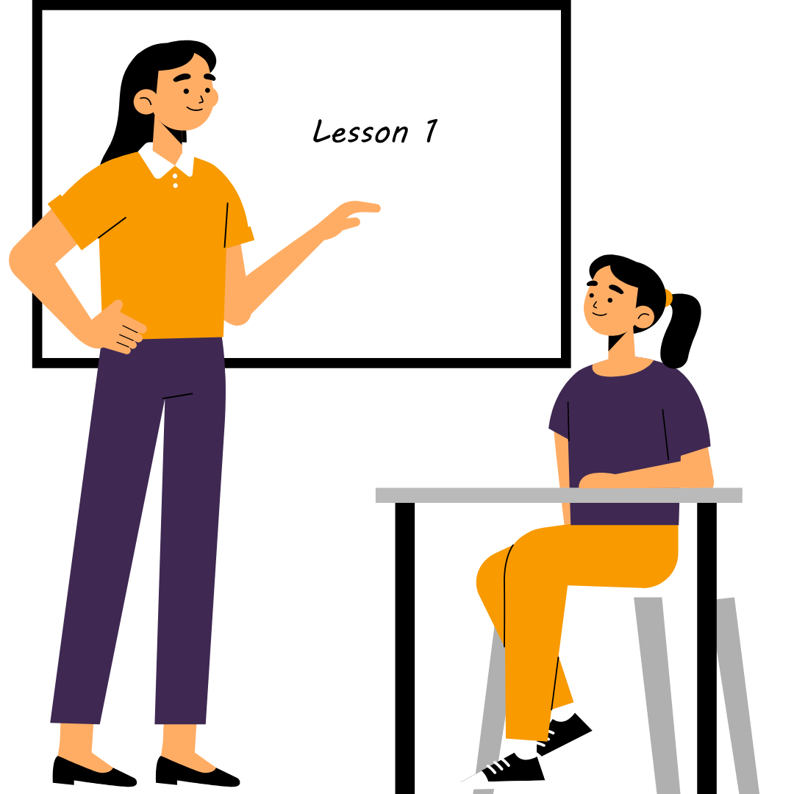

As teachers, we play a crucial role in educating the younger generation about global warming and how they can contribute to solving this pressing issue. Here are a few ways teachers can help solve global warming:
1. Integrate climate change education into the curriculum: Teachers can incorporate climate change education into various subjects such as science, geography, and social studies. This will help students understand the science behind global warming, its impact on the planet, and what they can do to reduce their carbon footprint.
2. Encourage sustainable practices in the classroom: Teachers can promote sustainable practices such as recycling, reducing energy consumption, and using eco-friendly products in the classroom. This will not only reduce the carbon footprint of the school but also teach students about the importance of sustainability.
3. Organize environmental activities and events: Teachers can organize environmental activities such as tree planting, environmental cleanups, and environmental fairs to raise awareness about global warming and encourage students to take action.
4. Use technology to promote sustainable practices: Teachers can use online resources, videos, and interactive games to educate students about global warming and promote sustainable practices.
